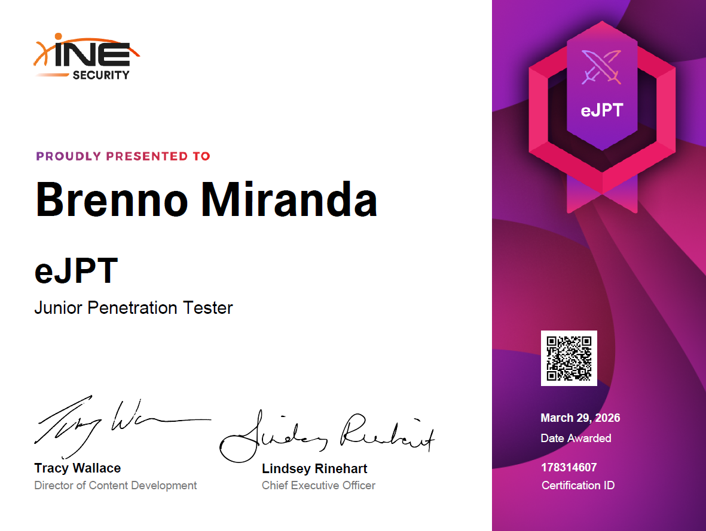

A eJPT, eLearnSecurity Junior Penetration Tester, ofertada pela INE Security, é uma certificação prática de nível introdutório voltada ao pentest, com ênfase em enumeração de redes, exploração de vulnerabilidades, uso do Metasploit Framework, pivoting e testes em aplicações web.
No dia 29/03/2026, realizei a prova e fui aprovado com aproximadamente 90% de acerto.

Temas cobrados
Perante o escopo da certificação, os seguintes domínios e temas são abordados:
- Assessment Methodologies (25%)
- Reconhecimento de redes
- Identificação de portas e serviços
- OS Fingerprinting
- Técnicas de OSINT
- Host and Network Penetration Testing (35%)
- Identificação e modificação de exploits
- Metasploit Framework
- Network Pivoting
- Ataques de força bruta
- Enumeração SMB
- Movimentação lateral
- Escalação de privilégios
- Host and Network Auditing (25%)
- Enumeração de sistemas
- Coleta de contas de usuário
- Extração de credenciais
- Enumeração de arquivos e diretórios
- Web Application Penetration Testing (15%)
- Identificação de vulnerabilidades web (SQL Injection, XSS)
- Descoberta de recursos ocultos
- Ataques a CMS (WordPress, Drupal)
- Brute-force em painéis de login
Sobre o exame
Trata-se de uma prova 100% prática e hands-on, composta por 45 questões baseadas em cenários reais. O candidato é inserido em um ambiente de laboratório acessível pelo navegador, simulando uma rede corporativa com múltiplos segmentos, incluindo uma DMZ e uma rede interna. As questões são respondidas com base nas descobertas obtidas ao longo da exploração ativa dos alvos.O candidato dispõe de 48 horas para concluir a prova, sendo necessário acertar ao menos 70% das questões (32 de 45) para ser aprovado. A prova é open book, permitindo o uso de anotações, cheatsheets e documentação. Não há proctoring, podendo ser realizada remotamente de qualquer local com conexão estável à internet. O voucher inclui 1 retake gratuito e tem validade de 180 dias a partir da compra. A certificação é válida por 3 anos.
Labs recomendados para treino
Para se preparar adequadamente para a eJPT, recomendo fortemente a prática em laboratórios hands-on. Abaixo estão rooms do TryHackMe, todas gratuitas e compatíveis com o nível da prova:- Ignite | https://tryhackme.com/room/ignite
- Startup | https://tryhackme.com/room/startup
- RootMe | https://tryhackme.com/room/rrootme
- Blog | https://tryhackme.com/room/blog
- Blue | https://tryhackme.com/room/blue
- Blueprint | https://tryhackme.com/room/blueprint
- Kenobi | https://tryhackme.com/room/kenobi
- Simple CTF | https://tryhackme.com/room/easyctf
Referências de estudo para o exame
- Metasploit Unleashed – OffSec | https://www.offsec.com/metasploit-unleashed/
- Nmap Reference Guide | https://nmap.org/book/man.html
- HackTricks – Network Pentesting | https://hacktricks.wiki/en/generic-methodologies-and-resources/pentesting-network/index.html
- HackTricks – Pivoting, Tunneling and Port Forwarding | https://hacktricks.wiki/en/generic-hacking/tunneling-and-port-forwarding.html
- HackTricks – Privilege Escalation Linux | https://hacktricks.wiki/en/linux-hardening/privilege-escalation/index.html
- HackTricks – Privilege Escalation Windows | https://hacktricks.wiki/en/windows-hardening/windows-local-privilege-escalation/index.html
- HackTricks - SMB Enumeration | https://hacktricks.wiki/en/network-services-pentesting/pentesting-smb/index.html
- TryHackMe – Jr Penetration Tester Path | https://tryhackme.com/path/outline/jrpenetrationtester